The Ultimate Rivalry
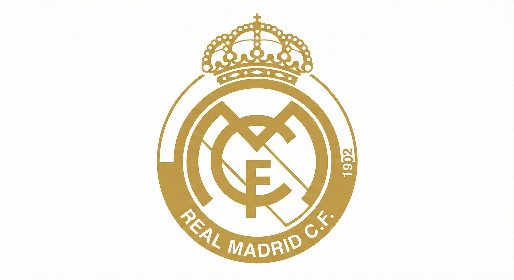
Founded 1902
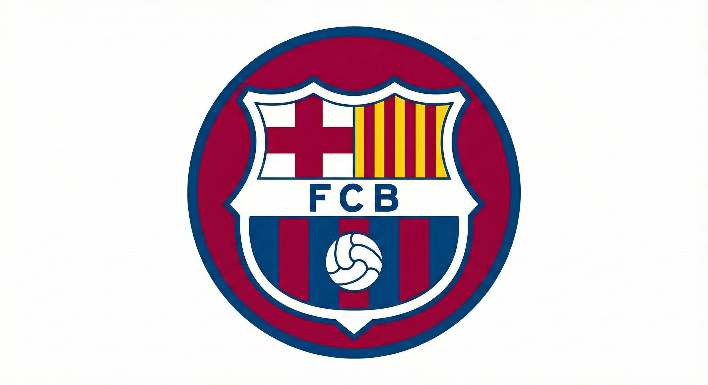
Founded 1899
Iconic moments from the greatest rivalry
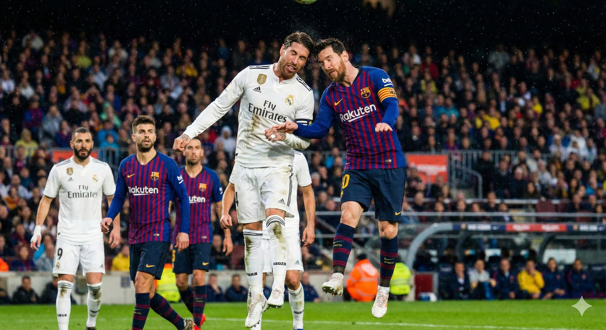
Historic Match
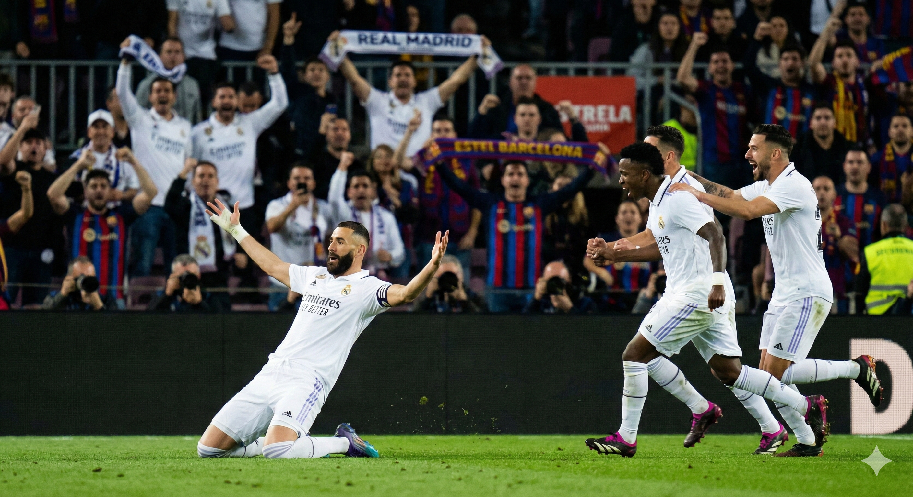
Legendary Goal
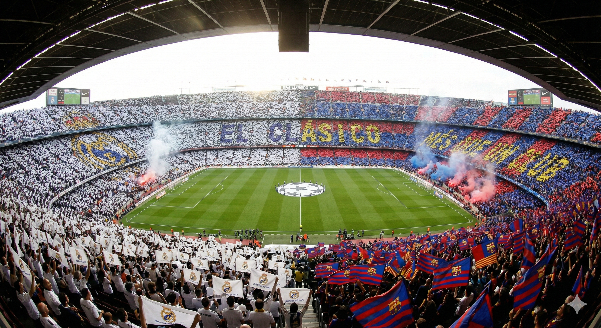
Stadium Atmosphere
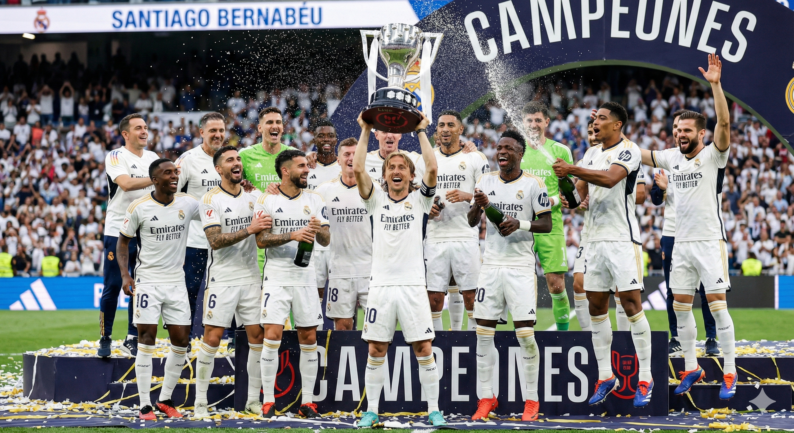
Trophy Celebration
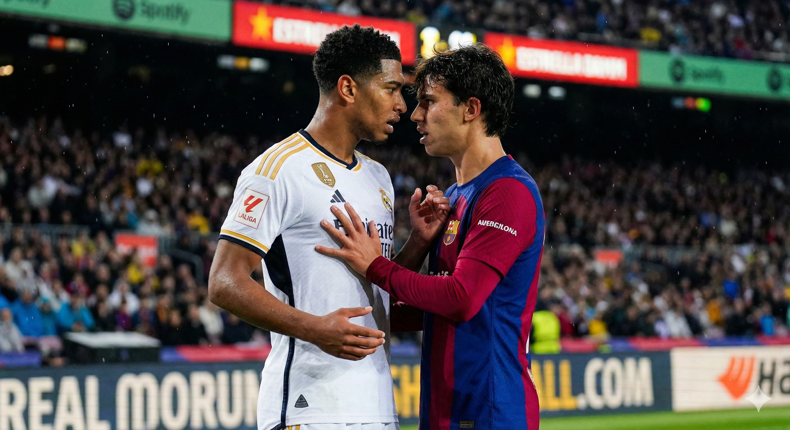
Player Rivalry
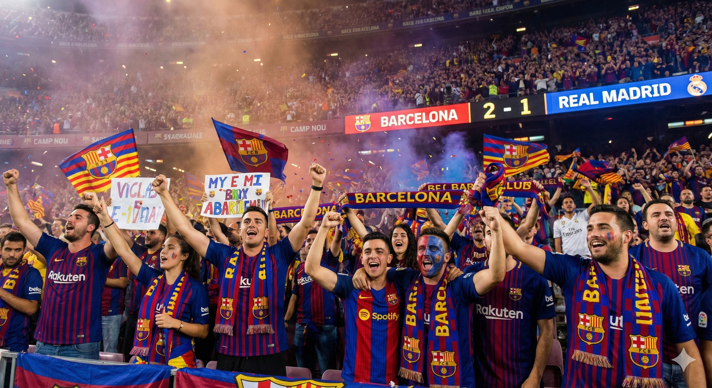
Fans Celebration
Real Madrid is renowned for their devastating counter-attacking style. They excel at absorbing pressure and then launching lightning-fast attacks, often catching opponents off-guard with their pace and precision.
The club has a tradition of signing world-class superstars, creating teams with exceptional individual talent. This philosophy emphasizes having the best players who can change games with moments of brilliance.
Real Madrid's style has been particularly effective in European competitions, where their experience, tactical flexibility, and ability to perform in high-pressure situations have made them the most successful club in Champions League history.
The club embodies a relentless winning mentality, often finding ways to win even when not playing at their best. This "never give up" attitude has defined Real Madrid throughout their history.
Barcelona revolutionized football with their tiki-taka style - a possession-based approach emphasizing short passes, movement, and maintaining control of the ball. This philosophy prioritizes technical skill and patience.
The club's famous youth academy, La Masia, has produced generations of world-class players. Barcelona's philosophy emphasizes developing homegrown talent and maintaining a consistent playing style from youth to first team.
Barcelona represents Catalan identity and values. The club's motto "Més que un club" (More than a club) reflects their commitment to social causes, cultural identity, and playing beautiful, attacking football.
Inspired by Johan Cruyff's vision, Barcelona plays a fluid, attacking style where players interchange positions, creating space and opportunities through intelligent movement and technical excellence.
El Clásico Legend
Lionel Messi's impact on El Clásico is legendary. The Argentine maestro has scored some of the most memorable goals in the rivalry's history, including a stunning solo effort where he dribbled past multiple Real Madrid defenders before slotting home. His performances in these matches have often been decisive, cementing his status as one of the greatest players to ever grace this fixture.
Messi's ability to rise to the occasion in El Clásico matches has made him a hero to Barcelona fans and a constant threat to Real Madrid. His technical brilliance, vision, and clutch performances have defined many memorable encounters between these two giants.
The 1943 Copa del Rey match remains one of the most talked-about games in El Clásico history. Real Madrid's overwhelming victory has been the subject of much discussion and controversy, representing one of the most lopsided results in the rivalry.
Barcelona's 5-0 victory in 2010 under Pep Guardiola was a tactical masterpiece. It showcased tiki-taka football at its finest, with Barcelona completely dominating possession and creating chance after chance in a display of footballing perfection.
Cristiano Ronaldo's performances in El Clásico were always special. His ability to score crucial goals, including memorable hat-tricks, made him a constant threat and added another layer of intensity to an already fierce rivalry.
El Clásico transcends sport. It represents the clash between Spain's two largest cities, Madrid and Barcelona, and often reflects broader cultural and political tensions. The match is watched by hundreds of millions worldwide, making it one of the most viewed annual sporting events.
The rivalry has produced countless iconic moments that have become part of football folklore. From legendary players to unforgettable goals, El Clásico has consistently delivered drama, skill, and passion that captivates fans across the globe, regardless of their club allegiance.
Real Madrid's dominance in European competitions has earned them the nickname "Kings of Europe." Their success in the Champions League has set the standard for excellence in continental football.
The club has consistently attracted and developed the world's best players. From Di Stéfano to Ronaldo, Real Madrid has been home to footballing legends who have shaped the game's history.
Real Madrid's winning mentality and ability to perform in crucial moments have made them one of the most successful clubs in football history, with numerous domestic and international titles.
Barcelona's identity extends beyond football. The club represents Catalan culture, values, and social causes, making it a symbol of regional pride and identity.
La Masia academy has revolutionized youth development in football. The club's commitment to developing homegrown talent has produced generations of world-class players.
Barcelona's commitment to playing attractive, possession-based football has influenced the game globally. Their style has been studied and emulated by coaches and teams worldwide.
Both clubs boast hundreds of millions of fans worldwide. Their matches are watched by audiences across every continent, making El Clásico one of the most viewed sporting events globally. The rivalry has transcended borders and cultures.
The tactical innovations and playing styles developed by both clubs have shaped modern football. From tiki-taka to counter-attacking excellence, their approaches have influenced how the game is played at all levels.
Club founded as Madrid Football Club
Won 5 consecutive European Cups
Signed world's best players (Zidane, Ronaldo, Beckham)
Won 4 Champions League titles in 5 years
Founded by Swiss businessman Joan Gamper
Johan Cruyff's revolutionary team
Pep Guardiola's dominant team with Messi, Xavi, Iniesta
Won La Liga, Copa del Rey, and Champions League
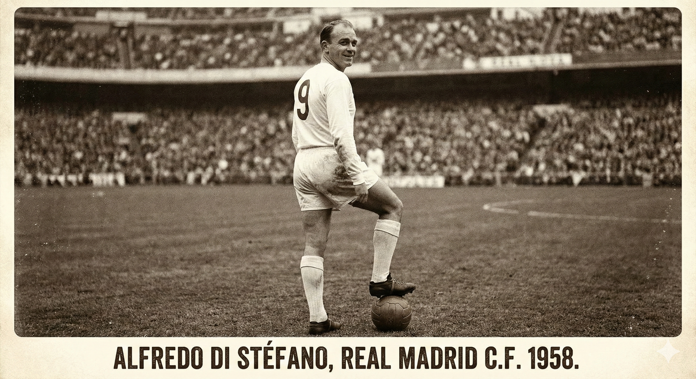
1953-1964
Position: Forward
Considered one of the greatest players of all time, Di Stéfano was instrumental in Real Madrid's early European dominance. His versatility and goal-scoring ability made him a legend of the game.
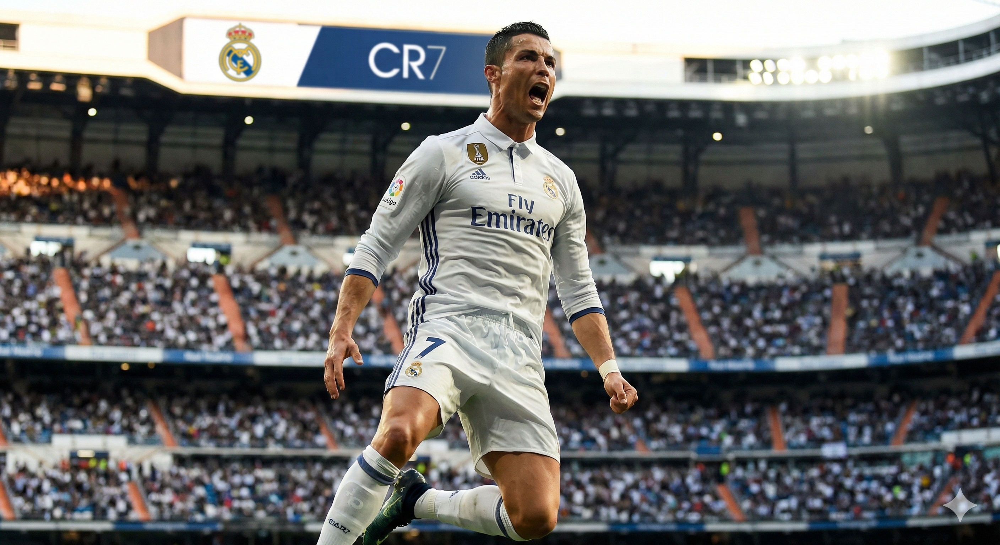
2009-2018
Position: Forward
Ronaldo's time at Real Madrid was marked by incredible goal-scoring records and numerous individual awards. His athleticism, skill, and determination made him one of the most feared forwards in El Clásico history.
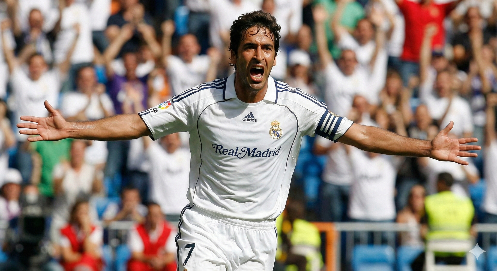
1994-2010
Position: Forward
Raúl was the embodiment of Real Madrid's fighting spirit. As captain, he led by example with his work rate, loyalty, and ability to score crucial goals in important matches, including many memorable El Clásico encounters.
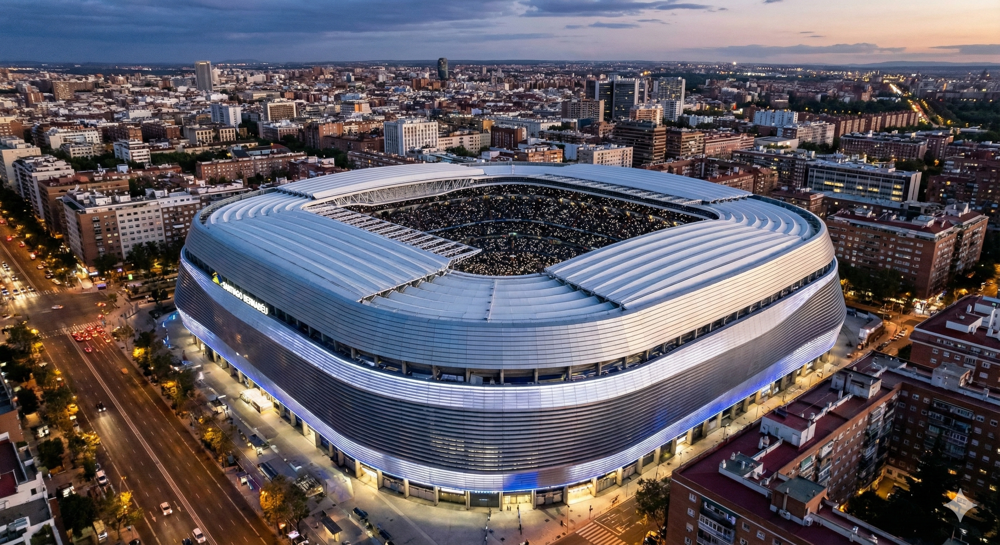